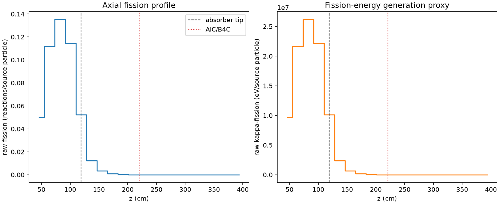
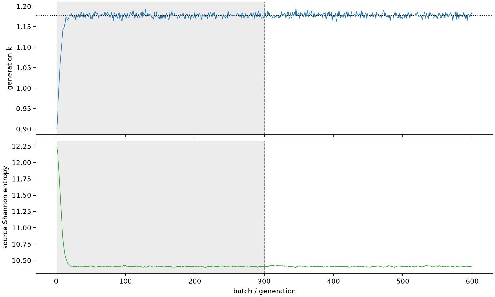

| field | value |
|---|---|
| experiment | V2-STAGE_256_OGRENCI_03-0032 |
| k | 1.1774447815826192 |
| MC standard error | 0.00019747036892920884 |
| seconds | 882.7421772689995 |
| acceptance | not_assessed |
| convergence | review_required |
Completed is output integrity only; physical and statistical review required. Zero tallies do not prove zero production or zero uncertainty.
| diagnostic | value |
|---|---|
| geometric fuel voxels | 5280 |
| zero fission tally voxels | 1682 |
| low signal fuel voxels | 2720 |
| low signal fission share | 9.826855892875682e-05 |
| low signal kappa share | 9.829559788334902e-05 |
| important fission share | 0.9502044701534006 |
| previous filter included | 2560 |
| duration estimate s | 1562.5173488400023 |
| actual minus estimate s | -679.7751715710028 |
| fission relative MC error | statistics |
|---|---|
| all_geometric_fuel | {"voxels": 5280, "positive_mean_voxels": 3598, "zero_mean_voxels": 1682, "undefined_relative_error_voxels": 1682, "median": 0.03036130637771161, "p95": 0.970779553762102, "maximum": 1.0000000000000002} |
| low_signal | {"voxels": 2720, "positive_mean_voxels": 1038, "zero_mean_voxels": 1682, "undefined_relative_error_voxels": 1682, "median": 0.580288420669016, "p95": 1.0, "maximum": 1.0000000000000002} |
| important_95pct | {"voxels": 1282, "positive_mean_voxels": 1282, "zero_mean_voxels": 0, "undefined_relative_error_voxels": 0, "median": 0.005498387757123182, "p95": 0.008236817539785909, "maximum": 0.009895523672944332} |
| outside_previous_filter | {"voxels": 2720, "positive_mean_voxels": 1038, "zero_mean_voxels": 1682, "undefined_relative_error_voxels": 1682, "median": 0.580288420669016, "p95": 1.0, "maximum": 1.0000000000000002} |
| kappa_fission relative MC error | statistics |
|---|---|
| all_geometric_fuel | {"voxels": 5280, "positive_mean_voxels": 3598, "zero_mean_voxels": 1682, "undefined_relative_error_voxels": 1682, "median": 0.030320405680468156, "p95": 0.9706993709963866, "maximum": 1.0000000000000002} |
| low_signal | {"voxels": 2720, "positive_mean_voxels": 1038, "zero_mean_voxels": 1682, "undefined_relative_error_voxels": 1682, "median": 0.5799086095813437, "p95": 1.0, "maximum": 1.0000000000000002} |
| important_95pct | {"voxels": 1282, "positive_mean_voxels": 1282, "zero_mean_voxels": 0, "undefined_relative_error_voxels": 0, "median": 0.0054923227445878246, "p95": 0.008227055471545367, "maximum": 0.0098832217803511} |
| outside_previous_filter | {"voxels": 2720, "positive_mean_voxels": 1038, "zero_mean_voxels": 1682, "undefined_relative_error_voxels": 1682, "median": 0.5799086095813437, "p95": 1.0, "maximum": 1.0000000000000002} |
| axial bin | fission share | kappa-fission share |
|---|---|---|
| 1 | 0.10415516477011019 | 0.10415720997310061 |
| 2 | 0.23255156983530587 | 0.2325452205907228 |
| 3 | 0.2813398130485959 | 0.2813322484687287 |
| 4 | 0.23773756934942855 | 0.23773179841268222 |
| 5 | 0.1086390123866019 | 0.10864643717407198 |
| 6 | 0.025730622269199224 | 0.02573786664880998 |
| 7 | 0.007097271286337239 | 0.007099418432333741 |
| 8 | 0.0019810884556425244 | 0.001981688011132401 |
| 9 | 0.0005611700728769593 | 0.0005613306763676168 |
| 10 | 0.00015434208559626027 | 0.00015439166656254925 |
| 11 | 3.7943892393380545e-05 | 3.795577489702884e-05 |
| 12 | 1.1562936518064344e-05 | 1.1563283817421436e-05 |
| 13 | 2.3477885897743717e-06 | 2.348199588808062e-06 |
| 14 | 4.947514893074642e-07 | 4.95353299870461e-07 |
| 15 | 2.7071314868728352e-08 | 2.7333884261283705e-08 |
| 16 | 0.0 | 0.0 |
| 17 | 0.0 | 0.0 |
| 18 | 0.0 | 0.0 |
| 19 | 0.0 | 0.0 |
| 20 | 0.0 | 0.0 |
Histories include the inactive-to-active transition at batch 300. kappa-fission approximates fission energy production, not total heat deposition.

